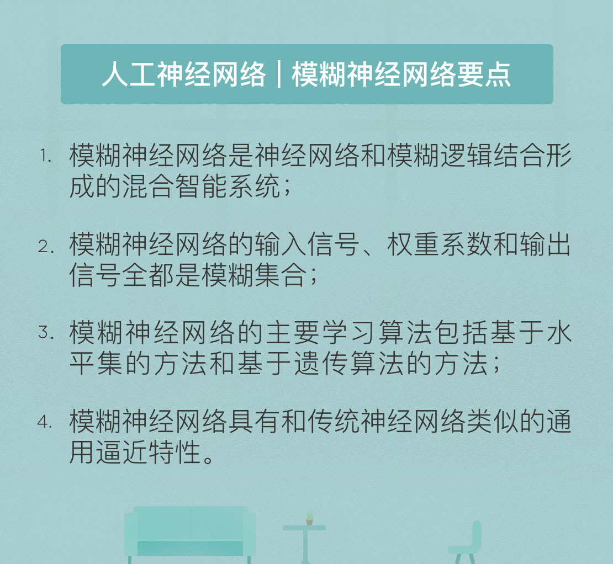

- 00 开篇词 人工智能：新时代的必修课.md.html
- 01 数学基础 九层之台，起于累土：线性代数.md.html
- 02 数学基础 月有阴晴圆缺，此事古难全：概率论.md.html
- 03 数学基础 窥一斑而知全豹：数理统计.md.html
- 04 数学基础 不畏浮云遮望眼：最优化方法.md.html
- 05 数学基础 万物皆数，信息亦然：信息论.md.html
- 06 数学基础 明日黄花迹难寻：形式逻辑.md.html
- 07 机器学习 数山有路，学海无涯：机器学习概论.md.html
- 08 机器学习 简约而不简单：线性回归.md.html
- 09 机器学习 大道至简：朴素贝叶斯方法.md.html
- 10 机器学习 衍化至繁：逻辑回归.md.html
- 11 机器学习 步步为营，有章可循：决策树.md.html
- 12 机器学习 穷则变，变则通：支持向量机.md.html
- 13 机器学习 三个臭皮匠，赛过诸葛亮：集成学习.md.html
- 14 机器学习 物以类聚，人以群分：聚类分析.md.html
- 15 机器学习 好钢用在刀刃上：降维学习.md.html
- 16 人工神经网络 道法自然，久藏玄冥：神经网络的生理学背景.md.html
- 17 人工神经网络 一个青年才俊的意外死亡：神经元与感知器.md.html
- 18 人工神经网络 左手信号，右手误差：多层感知器.md.html
- 19 人工神经网络 各人自扫门前雪：径向基函数神经网络.md.html
- 20 人工神经网络 看不见的手：自组织特征映射.md.html
- 21 人工神经网络 水无至清，人莫至察：模糊神经网络.md.html
- 22 深度学习 空山鸣响，静水流深：深度学习概述.md.html
- 23 深度学习 前方有路，未来可期：深度前馈网络.md.html
- 24 深度学习 小树不修不直溜：深度学习中的正则化.md.html
- 25 深度学习 玉不琢不成器：深度学习中的优化.md.html
- 26 深度学习 空竹里的秘密：自编码器.md.html
- 27 深度学习 困知勉行者勇：深度强化学习.md.html
- 28 深度学习框架下的神经网络 枯木逢春：深度信念网络.md.html
- 29 深度学习框架下的神经网络 见微知著：卷积神经网络.md.html
- 30 深度学习框架下的神经网络 昨日重现：循环神经网络.md.html
- 31 深度学习框架下的神经网络 左右互搏：生成式对抗网络.md.html
- 32 深度学习框架下的神经网络 三重门：长短期记忆网络.md.html
- 33 深度学习之外的人工智能 一图胜千言：概率图模型.md.html
- 34 深度学习之外的人工智能 乌合之众的逆袭：集群智能.md.html
- 35 深度学习之外的人工智能 授人以鱼不如授人以渔：迁移学习.md.html
- 36 深度学习之外的人工智能 滴水藏海：知识图谱.md.html
- 37 应用场景 你是我的眼：计算机视觉.md.html
- 38 应用场景 嘿, Siri：语音处理.md.html
- 39 应用场景 心有灵犀一点通：对话系统.md.html
- 40 应用场景 数字巴别塔：机器翻译.md.html
- 一键到达 人工神经网络复习课.md.html
- 一键到达 应用场景复习课.md.html
- 一键到达 数学基础复习课.md.html
- 一键到达 机器学习复习课.md.html
- 一键到达 深度学习之外的人工智能复习课.md.html
- 一键到达 深度学习复习课.md.html
- 一键到达 深度学习框架下的神经网络复习课.md.html
- 推荐阅读 我与人工智能的故事.md.html
- 新书 《裂变：秒懂人工智能的基础课》.md.html
- 直播回顾 机器学习必备的数学基础.md.html
- 第2季回归 这次我们来聊聊机器学习.md.html
- 结课 溯洄从之，道阻且长.md.html
- 课外谈 “人工智能基础课”之二三闲话.md.html
- （课外辅导）人工神经网络 拓展阅读参考书.md.html
- （课外辅导）数学基础 拓展阅读参考书.md.html
- （课外辅导）机器学习 拓展阅读参考书.md.html
- （课外辅导）深度学习 拓展阅读参考书.md.html
- 捐赠
21 人工神经网络 水无至清，人莫至察：模糊神经网络
模糊神经网络是一类特殊的神经网络，它是神经网络和模糊逻辑结合形成的混合智能系统，通过将模糊系统的类人推理方式与神经网络的学习和连接结构相融合来协同这两种技术。简单来说，模糊神经网络（fuzzy neural network）就是将常规的神经网络赋予模糊输入信号和模糊权值，其作用在于利用神经网络结构来实现模糊逻辑推理。
在生活中，我们在臧否人物时很少给出非黑即白的二元评价。这是因为每个人在生活中都扮演着复杂的多重角色，不是好人就是坏人的评判方式显然有失客观。这就是模糊理论在生活中最直接的体现。正如美国加州大学伯克利分校的洛特菲·扎戴所说：“当系统的复杂性增加时，我们使它精确化的能力将减小。直到达到一个阈值，一旦超越这个阈值，复杂性和精确性将相互排斥。”
1965年，正是这位洛特菲·扎戴提出了与模糊数学相关的一系列理论，并由此衍生出模糊系统的概念。1988年，供职于日本松下电气的高木秀幸和小林功提出了将神经网络与模糊逻辑结合的想法，这标志着神经模糊系统（Neuro-fuzzy system）的诞生。神经模糊系统的基础是模糊集合和一组“如果……那么……”形式的模糊规则，利用神经网络的非线性和学习机制获得类人的推理能力。1993年，意大利帕多瓦大学的乔万尼·波尔托兰提出了将多层前馈神经网络模糊化的思路，这就是这里所讨论的模糊神经网络。
需要说明的是，模糊神经网络和神经模糊系统是不同的。神经模糊系统的输入和输出都是确定对象。因此在神经模糊系统中，必备的结构是模糊化层和去模糊化层。模糊化层用于将输入的确定对象模糊化，去模糊化层则用于将输出的模糊对象转化为确定对象。相比之下，模糊神经网络的输入和输出都是模糊对象，完成的也是模糊推理的功能。
在介绍模糊神经网络之前，有必要对一些基本概念加以解释。模糊理论中最基本的概念是模糊集合。在不模糊的集合里，每个元素和集合之间的隶属关系是明确的，也就是要么属于集合，要么不属于集合，两者之间泾渭分明。可在模糊集合中，元素和集合之间的关系不是非此即彼的明确定性关系，而是用一个叫做隶属度的函数定量表示。在现实中评判某个人物的时候，通常会说他“七分功三分过”或是“三分功七分过”，这里的三七开就可以看成是隶属函数。
模糊集合是对“对象和集合之间关系”的描述，模糊数描述的则是对象本身。“人到中年”是很多人愿意用来自嘲的一句话，可中年到底是个什么范围呢？利用排除法可以轻松确定25岁算不上中年，55岁也算不上中年，可要是对中年给出一个明确的正向定义就困难了。因而如果把“中年”看作一个数的话，它就是个模糊数。模糊数在数学上的严格定义是根据模糊集合推导出来的，是个归一化的模糊集合，但通俗地说，模糊数就是只有取值范围而没有精确数值的数。
模糊数可以用来构造模糊数据，对模糊数据进行运算时，依赖的规则叫做扩展原理。对两个确定的数做运算，得到的结果肯定还是一个确定的数。可一旦模糊数参与到运算中来，得到的结果也将变成一个模糊数。扩展原理及其引申得到的模糊算术，定义的就是运算给模糊数的模糊程度带来的变化，这当然也是一个通俗的说法。在模糊算术中，传统的加减乘和内积等运算都被改造成对模糊集合的运算。
有了这些概念，就可以进一步解释模糊神经网络。模糊神经网络的拓扑与架构和传统的多层前馈神经网络相同，但其输入信号和权重系数都是模糊集合，因而其输出信号同样是模糊集合。而在网络内部，处理输入信号和权重系数的则是模糊数学，隐藏神经元表示的就是隶属函数和模糊规则。模糊化的处理必然会影响神经网络的特性，因而学习算法的设计和通用逼近特性的保持就成为模糊神经网络要解决的核心问题。
构成模糊神经网络的基本单元是模糊化的神经元。模糊神经元的输入信号和权重系数都是模糊数，传递函数也需要对模糊集合上的加权结果进行处理。模糊神经元的组合形成模糊神经网络。模糊神经网络的训练方式同传统的神经网络类似，即定义一个误差函数并使其最小化。但由于模糊数不能进行微积分的计算，因此不能直接对模糊的权重系数使用反向传播，需要在处理误差时需要针对模糊数的特性提出新的方法。两种常用的方法是基于水平集的方法和基于遗传算法的方法。
基于水平集的方法采用的是直接推导的方式，通过确定模糊集合的水平集对模糊数中的元素加以筛选。假如一个模糊数中包含三个元素x、y和z，其参数分别是0.3、0.6和0.7，那么当截断点等于0.5时，这个模糊数的0.5水平集就会把参数为0.3的元素x过滤掉，只保留参数大于0.5的y和z。在神经网络的训练中，训练算法的作用就是通过计算偏导数和应用反向传播算法，优化每个水平集的截断点，从而确定模糊权值。
水平集方法的致命缺陷在于缺乏理论依据，这严重限制了它的应用。一个不加任何限制的模糊数肯定不能用有限个参数来描述，因而要基于水平集方法来设计通用的模糊神经网络学习算法是不可能的。当模糊数被限制为三角形或者梯形时，算法可以得到一定的简化。
在模糊神经网络的训练中，如果保持学习率参数不变，误差函数就难以快速收敛。即使收敛也可能陷入局部最小值上，在不同的学习率参数下得到不同的局部最小值。为了处理这个问题，模糊神经网络引入了一种叫做“共轭梯度（conjugate gradient）”的机制，使训练过程能够找到全局最优解。而要确定最优的学习率，就要借助遗传算法（genetic algorithm）。
共轭梯度方法比较复杂，在这里不做展开。相比基于水平集的方法，基于遗传算法的方法是摸着石头过河，通过迭代逐步找到误差函数的最小值，从而确定权重系数。但它并没有解决水平集方法的本质问题，适用范围仍然被局限在三角形和梯形这类特殊的模糊数上，纯属换汤不换药的做法。
除了学习算法之外，逼近性能也是模糊神经网络设计中的核心问题。传统神经网络可以通过引入少量隐藏层实现对任意问题的逼近，但模糊神经网络能不能达到这个要求尚需证明。受学习算法的限制，对逼近性能的考察也只能针对特定类型的模糊神经网络进行。研究结果表明，当输入和权值都被限定为实数时，四层的前馈网络就足以逼近任意形式的模糊取值函数。这意味着模糊神经网络和传统神经网络的性能是相同的，因为抛去输入层和输出层之外，四层网络就只剩两个隐藏层了。
模糊神经网络是一种混合智能系统，能够同时处理语言信息和数据信息，因而是研究非线性复杂系统的有效工具，也是软计算的核心研究内容之一，在模式识别、系统分析和信号处理等领域都有成功应用的实例。但相对于打了翻身仗的传统神经网络，摆在模糊神经网络面前的依然是雄关如铁的境地。
今天我和你分享了模糊神经网络的基本概念，其要点如下：
- 模糊神经网络是神经网络和模糊逻辑结合形成的混合智能系统；
- 模糊神经网络的输入信号、权重系数和输出信号全都是模糊集合；
- 模糊神经网络的主要学习算法包括基于水平集的方法和基于遗传算法的方法；
- 模糊神经网络具有和传统神经网络类似的通用逼近特性。
模糊理论代表了一种思维方式，它更接近于人类的思考习惯。那么融合了定性和定量的模糊理论会给用于规则推演的人工智能带来什么样的启发呢？
欢迎发表你的观点。

© 2019 - 2023 Liangliang Lee. Powered by gin and hexo-theme-book.